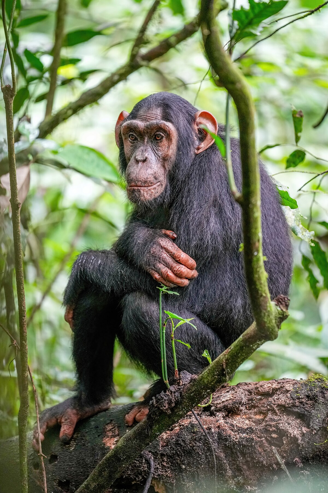
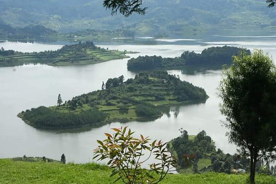
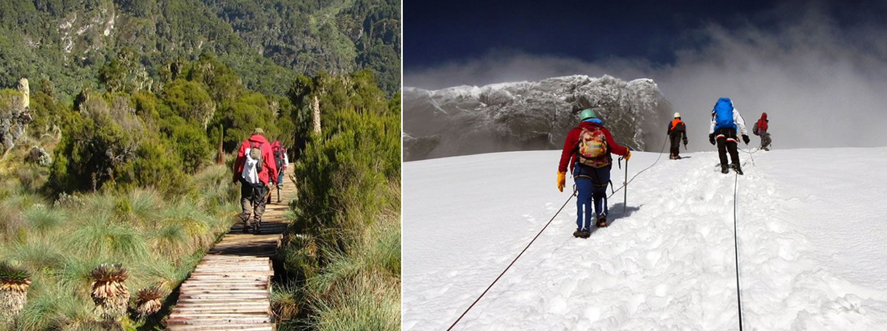

Welcome to Uganda(The Pearl Of Africa), a country that beckons with its
awe- inspiring landscapes, an abundance of wildlife, and a rich tapestry of cultural Heritage.
Tucked away in the heart of East Africa, Uganda remains one of the continent's best secretes, a haven for
adventures souls and curious wanders a like. From the exhilaration of tracking mount gorillas through
pristine rainforest to the thrill of Safari expeditions across the vast savannah,Uganda offers unparalled
opportunities for Exploration.
Here! we're going to discuss the things you can do in Uganda, and make your trip wonderful.
1 GO IN SEARCH OF GORILLAS.

This is mostly common in Bwindi_Impenetrable_National_Park_, a home for
endangered mountain gorillas. Here you will have a chance to go an awe- inspiring
trek to get a front row seat to see these creatures in their natural habitat.
You will start with early morning briefing, where groups are assigned to specific gorilla families
.Accompanied by experienced guides and skilled trackers, you will set off on the journey through a
diverse range of terrains and witness gorilla families going about their daily lives.
If you are passionate about conservation, you will be pleased to know that the fee
you pay for this experience contributes to conservation of these animals the preservation of their habitat
2. HANG OUT WITH CHIMPANZEES

chimpanzee trekking is the a must-do experience for wildlife anthusiasts seeking an up-close encounter with
remarkable primates.
Located in the western Uganda Kibale-Forest-National-Park is internationally
recognized for its population of chimpanzee and offers a once-in-a-life time opportunity to observe them
in their natural habitat
You will be Accompanied by a trained guides through the forest who possess extensive knowledge of the
area and the chimpanzee troops'habitats inreasing your chnaces of a successful sighting. While on your trek,
you will likely encounetr other fascating wildlife,including avrious monkey species, colorful birds and
butterflies.
The forest's main focus is toprotect chimpanzees, which is achieved by tourist entrance fee and obtaining permits.
These fees are used to fund the differen projects thart ensure the safety of the chimpanzees and the
preservation of their homes, which ensures that these endangered animals can continue to live
and grow in their natural surroundings.
3.RELAXING AROUND LAKE BUNYONYI
Lake Bunyonyi si an ideal destinationto unwind before or after a challenging trek
The name Bunyonyi, means "a place of little birds" its more interesting for bird watchers, but this
serene spot offer is so much more for tours than meets the eye.
visitors have a chance to choose either leisurely boat ridre on the tranquil waters of the lake or
engage with local community. Thsi engagementoften includes discussions about local cultural traditional
and ways of life.
For those who are interested in hiking, the lake provides an attractive destination with its network of
trails that wind through lush forest. You will be treated to picturesque viwe of the surrounding landscape,
so bring your camera to capture some breathtaking shots
4. HIKING ON MOUNTAIN RWENZORI
The Rwenzori mountains,also know as the "mountains of the moon" offer
a trekking experience like no other in Africa. They are not only UNESCO world Heritage Site but also
a place steeped in local legends and culture.
As you ascend through lussh rainforests, alpine meadows, and rugged terrian, you will be rewarded with
magnificant views and encounter with unique flora and fuana nowhere else on the continent. The highlight
though, is reaching the glaciers and snow capped peaks,, a rare sight so close to the equator.The
The highest peak,is called Margherita peak. Stands at over 5,00 metters(16400 feet) and presents
a challenging but incredibly rewarding goal seanoned hikers
throughout your journey you wil be accompanied by experienced guides and porters who will ensure
your safety and provied avaluable insights into the mountain's ecology and history
5.VISIT MURCHISON FALLS NATIONAL PARK

There are quite number of things you can do while on a safari at Murchison
falls, Here! are some of them
Your journey begins at Murchison Falls National-Park, the largest protected area
in Uganda .The park is reowned for its diverse wildlife, like:elephants, giraffes,
hippos, crocodiles among othres. Game drives offer a chance to encounetr these
magnificant creatures in their natural habitat, creating unforgettable safari
experiences.
.RIVER NILE: Murchison Falls is situated alond the might River Nile, which provides
ample opportunities for baot safaris and cruise. You can explore the riverbanks, spot basking
crocidiles, lazing hippos, and a wealth of birdlife, including the remarkable shoebill stork.
.The Murchison Falls: The highlightof your visit is course, the breathtaking
Murchison Falls themselves. witness the River Nile the longest river in the world
dramatically narrowing through a seven- meter wide gorge before plunging 43 meters
down. The resulting waterfalls craetes a thundreous roar and mesmering spectacles of
powerful cascades and mist.
. Hike on the Top: For the adventures spirits, a hike to the to the top of
Murchison Falls offers a closer look at this natural Wonder. The challenging but
rewarding trek allows you to stand at the precipice and feel the incredible force
of the rushing waters.
. Bird watching: Murchison Falls National-Park is home for bird watchers.
With over450 bird species including the rare and elusive shoebill stork, its a paradise
for ornithology enthusiasts.
BOAT RIDE ALONG THE KAZINGA CHANNEL

kazinga channel is 20 mile long rive connecting Lake George and lake Edward . This waterway is natural
habitat for wildlife, attracting animals of all sizes who gather at the banks to drink water and bath
. On any given day, you will virtually sight wildlife like elephant, hippos buffalos and many others
CYLYING THROUH LAKE MBURO NATIONMA PARK

Lake mburo National-Park invites you to embarks on guided cylying safari that offers a unique
opportunity to exploer its diverse landscape and encounter resident wildlife. Accompanied by
knowledgeable guides you will transerve th epark while gaining valuable insights into the flora
and fauna that grace your path.
As you pedal through the park's expanse, keep your eyes peeled for Zebras, impalsa, warthogs,
buffalos, and array of bird species in their natural environment.
The park boast a network of well maintained trails and roads that wind their way through
acacia woodlands, savannah grasslands and the picturesque surrounding of lake mburo
itself.
For those who are always up for adventure, consider anight cycling safari.Exploring the park
after dark as unveils a world of nocturnal wildlife, including bushbabies, owls and hyenas.
HIKING IN SIPI FALLS

You will discover the peaceful hill town of Sipi falls.Its hidden gem
Tucked away in the foothills of Mount Elgon, Near the Kenyan border. If you are looking for a serene
escape from the hustle and bustle of Kampala, Sipi Falls offers the perfect mountains retreat.
Sipi Falls is reowned for being a paradise for adventure enthusiasts, especically those who love
hiking , climbimg and hill running. The town gets its name from stunning waterfalls.
The main attraction here is a capativiting day long hike that takes you to these magnificant
waterfalls, allowing you to witness their beauty up close.
However, Sipi Falls has more to offer tha just hiking. visitors can engage in varous outdoor
activites, from guided tours of local coffe plantations to leisurely birdwatching adventures.
GAME DRIVE IN KIDEPO VALLEY NATIONAL PARK

Kidepo Valley offers, a thrilling Safari adventure in one of Af's untouched wilderness areas
This remote park boast diverse wildlife, including lions, elephants and rare birds species. its rugged
landscape and dramatic scenery make for exceptional photography.
With the knowledgeable guides, you will discover the park's secretes and many even spot nocturnal
animals on night drives. Kidepo Valley's remoteness ensures a away from the crowds, andits a chance
to appreciate both nature and local culture